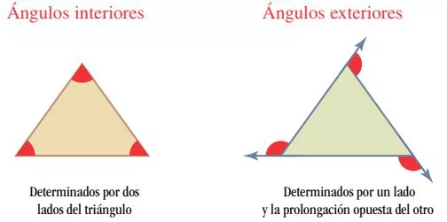
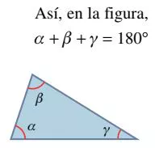
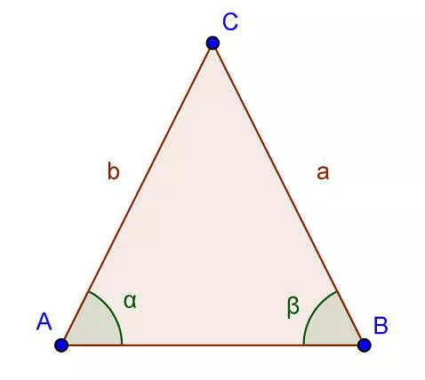
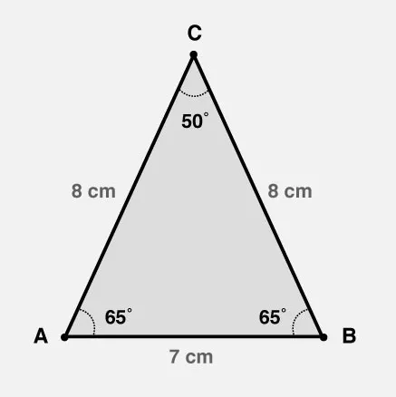
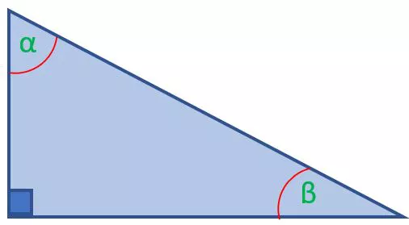
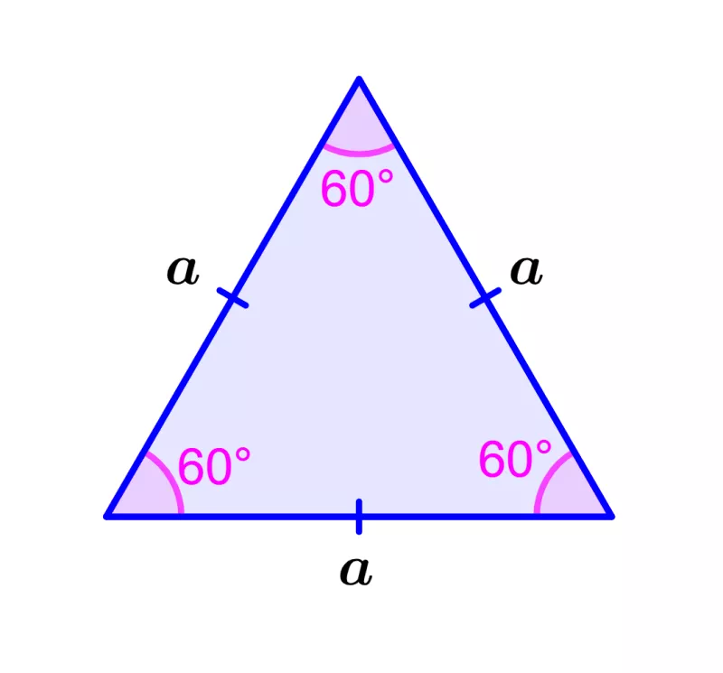
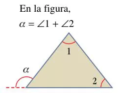
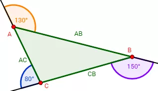
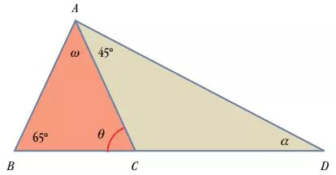

Todo triángulo (\(\triangle\)) tiene tres ángulos interiores y tres ángulos exteriores.

La suma de los tres ángulos interiores de un triángulo es igual a 180°

Los ángulos de la base de un triángulo isósceles son iguales
En las figuras \(\alpha = \beta \)

En un triángulo rectángulo sus ángulos agudos suman 90°
En las figuras \(\alpha + \beta = 90°\)

En un triángulo equilátero cada uno de sus ángulos tienen un valor igual a 60°

Todo ángulo exterior de un triángulo es igual a la suma de los ángulos internos no adyacentes

La suma de los ángulos externos de cualquier triángulo es igual a 360°

Combinando ángulos y propiedades Halla el valor de \(\theta ,\, \omega ,\, \alpha \). En la figura, AB = AC.

Solución:
\(\theta\) = 65° por ser ángulo de la base BC del triángulo isósceles ABC.
\(\omega\) = 50° al ser \(\omega+\theta+65°=180°\), se tiene \(\omega = 180° - 65° -65°= 50°\).
\(\alpha\) = 20° por ser \(\theta\) exterior al \(\triangle\)ACD, \(\theta=\alpha+45°\). De aquí:
\(\alpha=65°- 45° = 20°\).